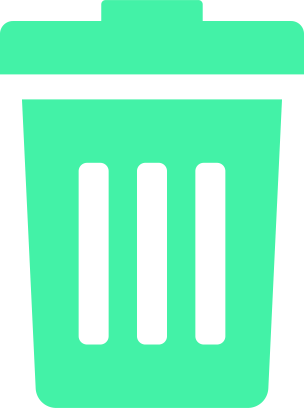

<div (resized)="fixLayout()" class="pb-4">
    <div class="flex flex-row justify-between text-xl text-gLight">
        <h2>Favorites ({{ favoriteItemCount }})</h2>
        <h2 class="p-0 h-fit text-xl text-gLight cursor-pointer hover:text-gAccent" (click)="clearFavorites()">Clear all...</h2>
    </div>
    <ngx-masonry [options]="{ gutter: 10 }" #favorites>
        <div ngxMasonryItem class="bg-gBackgroundLight border-2 border-gDark min-h-fit mb-2.5" *ngFor="let favoriteItem of (favoriteItems$ | async); index as i">
            <picture *ngIf="favoriteItem.type === 'gif'; else clips" #favoritesListItems>
            <!-- <picture *ngIf="favoriteItem.type === 'gif'" #favoritesListItems> -->
                <source class="w-[171px] min-h-fit" type="image/webp" [srcset]="favoriteItem.preview">
                
            </picture>
            <ng-template #clips>
                <!-- TODO: SHOW GIF WHEN CLICK SHOW MP4 -->
                <video loop [autoplay]="false" [muted]="true" (mouseover)="playVideo(i)" (mouseout)="stopVideo(i)" class="w-[171px] min-h-fit" #favoritesListItems>
                    <source [src]="favoriteItem.original">
                </video>
            </ng-template>
            
        </div>
    </ngx-masonry>
    <div *ngIf="(favoriteItems$ | async)!.length === 0">
        <p class="text-center text-lg text-gAccent">You've got not a single favorite yet! :(<br>Click the heart icon to add a GIF/Clip to your favorites.</p>
    </div>
</div>
